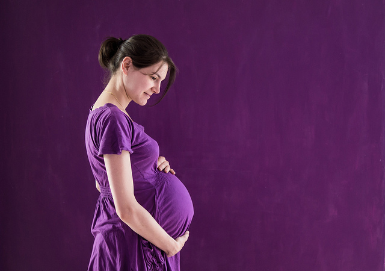

Orari i punës
Çdo ditë të punës.
Ndërrimi i parë: 07:00 - 14:00
Ndërrimi i dytë: 13:00 - 20:00
Synojmë që të ju ndihmojmë pacientëve tanë që t’i mbajnë dhëmbët natyral dhe të ju mundësojmë buzeqeshje perfekte. Ju falënderojmë për besimin tuaj!

qeramikë jometalike, zirkonium


Çdo ditë të punës.
Ndërrimi i parë: 07:00 - 14:00
Ndërrimi i dytë: 13:00 - 20:00
Ordinanca jonë gjendet në mes të qendrës së Shkupit, te stacioni policer “Beko”.
Marrëveshje me Fondin e sigurimit shëndetësor të Republikës së Maqedonisë.
Protezat përpunohen me çmimet e fondit.
Në raste urgjente mund të pranohen pacient edhe ditën e Shtunë.
Përdorim instrumente moderne dhe metoda të sofistikuara që të mirëmbajmë shëndetin dhe buzëqeshjen e bukur të pacientëve tonë.
Personeli jonë do të kujdeset për tejkalimin e problemeve të juaja dentale pa frigë.
Në qoftë se keni pyetje tjera, mos hezitoni që të na kontaktoni
Çdo pacient ka nevojat e veta unike. Mënyra më e mirë që të vërtetohet ndonjë problem, poashtu edhe të përgatitet plan për trajtim dhë kujdes të dhëmbëve tuaj është konsultim me stomatolog ose specialist të protetikës.
Trajtim nga specialisti është i nevojshëm në disa raste: kur ju mungon një ose më shumë dhëmbë, kur ka protezë ose protezë parciale që mund të largohet, kur nevojitet ngjitje e urës me dhëmbë, si dhe kur doni t’a përmisoni estetikën e dhëmbëve tuaj.
Në rastë të këtilla, specialistet mund të ju ofrojnë më shumë zgjidhje të afatgjata për dhëmbët e juaj: kurorë, ura, faceta, proteza parciale dhe të plota. Përgjithësisht, çdo intervenim stomatologjik i tillë quhet rikonstruksion i gojës. Këto trajtime ndryshojnë varësisht nga nevoja, ndërsa më së shumti nga dëshirat e pacientit.
Rënia e dhëmbëve mund të shkaktohet nga prishja afatgjate e dhëmbëve, lëndim, sëmurje, paradentozë (dëmtim i mishit të dhëmbëve), madje edhe prej traumës. Rënia e dhëmbëve krijon probleme funksionale dhe estetike, si dhe humbje të vetbesimit tuaj. Specialistët e protetikës janë të kualifikuar që t’a kthejnë buzëqeshjen tuaj, si dhe funksionimin optimal të dhëmbëve. Rekomandohet vizitim dhe kontrollim të rregullt ke stomatologi juaj personal, me qëllim që të shmanget ky rast i jodëshirueshëm.
Ekzistojnë disa zgjidhje dhe këshilla për dhëmbët e ndieshëm, prej të cilave më e njohur është përdorimi i pastave për dhëmbë dhe mish të ndieshëm.
Kjo pastë përmban strontium chloride ose potassium nitrate dhe është shumë efikase në trajtimin e këtij problem që mund të paraqitet te pacientët.  Në të shumtën e rasteve, pas përdorimit disa javor mund të vërehet zvogëlim i ndieshmërisë.
Është e njohur se ushqimi me shkallë të lartë të thartësisë, siç është citron, portokalli apo limoni, si dhe disa lëngje dhe çajëra kontribojnë në ndieshmërinë e zmadhuar të mishit, dhe për atë rekomandohet zvogëlim I konsumimit të gjërave të tilla.
Në të shumtën e rasteve, pas përdorimit disa javor mund të vërehet zvogëlim i ndieshmërisë.
Është e njohur se ushqimi me shkallë të lartë të thartësisë, siç është citron, portokalli apo limoni, si dhe disa lëngje dhe çajëra kontribojnë në ndieshmërinë e zmadhuar të mishit, dhe për atë rekomandohet zvogëlim I konsumimit të gjërave të tilla.
Prodhimet që pëmbajnë shumë fluorid poashtu kontribojnë në zvogëlimin e ndieshmërisë së lartë. Stomatologi apo specialist i protetikës mund të ju ndihmon që të liroheni nga kjo ndjenjë e papëlqyeshme.
Ekzistojnë disa arsye për paraqitjen e erës së keqe. Më të shpeshtat janë: gojë e thatë, prodhimet e duhanit, infektim gojor, problem shëndetësore dhe higjienë e dobët dentale.
Mirëmbajtja e higjienës së mire orale është e detyrueshme për zvogëlimin e erës së pakëndshme. Ajo mund të arritet me vizita të rregullta të stomatologit të juaj. Poashtu rekomandohet lardje e dhëmbëve me brushë dy herë në ditë, dhe nëse ka nevojë, përdorim i penit për dhëmbë. Në qoftë se stomatologi juaj vërteton se dhëmbët e juaj janë plotësisht të shëndoshë, ndërsa ende problemi i erës është prezent, rekomandohet vizitë të doktorit të shëndetit të përgjithshem, që të zbulohet arsyja dhe të trajtohet së shpejti.
Infektimet dhe problemet tjera siç janë tërheqja e mishit ose sëmurja paradentale janë disa nga problemet më të shpeshta që paraqiten te pacientë që kanë diabet. Diabeti e ulë mundësinë e trupit që të lufton kundër infektimeve dhe ajo rezulton me uljen e qarkullimit të gjakut në mishin e dhëmbëve. Këto faktorë kanë tendencë që t’a rritin paraqitjen e këtij problemi te pacientët.
Higjiena e mire orale, larja siç duhet dhe mirëmbajtja e dhëmbëve, si dhe vizitat e rregullta te stomatologi mund të ju ndihmojnë në ndalimin dhe përballjen me këtë lloj sëmurje.
Ndryshimi i nivelit të hormonëve gjatë shtatzanisë mund të shkaktoj që mishi i dhëmbit normal dhe i shëndoshë të bëhet më i irituar, të paraqitet ndezje dhe ënjtje. Kjo njihet si “gjingjivit gjatë shtatzanisë” (pregnancy gingivitis) dhe është reaksion i vet trupit gjatë shtatzanisë. 
Vizitat e rregullta të stomatologit gjat shtatzanisë janë posaçërisht të rëndësishme për zbulim të shpejtë dhe parandalim të ndezjes potenciale të mishit. Është e zakonshme që trajtimet më të mëdha dhe më serioze të bëhen pas shtatzanisë, mirëpo në raste urgjente rekomandohet që të zgjidhet problemi sa më shpejtë. Për shkak se organet e bebes formohen gjatë tremujorshit të pare, koha ideale për zgjidhje të problemit është në tremujorshin e dytë, me çka zvogëlohet çfarëdo rreziku potencial.
Sugjerimet, kritikat dhe lavdatat janë të mirëseardhura! Në qoftë se keni ndonjë pyetje, ose doni të caktoni termin, mbusheni pyetësorin më poshtë: